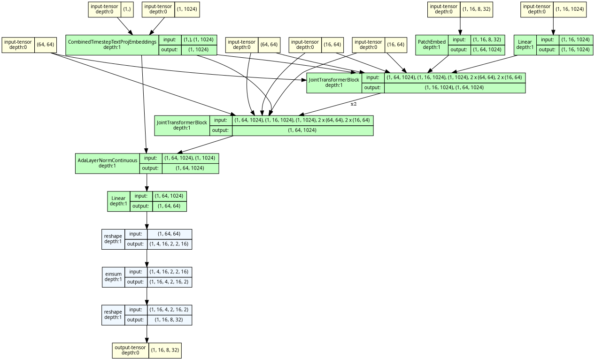
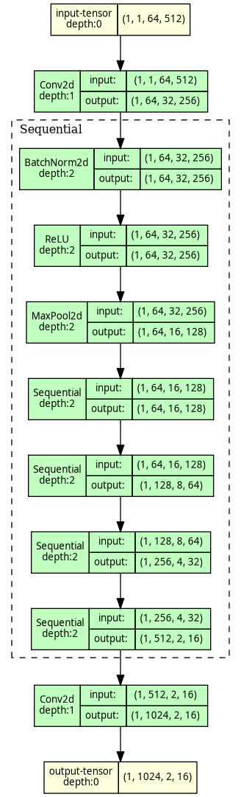

A from-scratch SD3 MMDiT (≈900M, SD3.5 attention) that learns to un-blur noise into handwriting,
guided by a Unifont stencil of the text and a DINOv3 style vector, with a REPA head-start.
Every section below: a visual, the real shapes/numbers, and the why. Full text: ARCHITECTURE.md.
Toggle the two scenarios and step through. The lit wire is the current data hop; the box below explains it with the analogy, the math, and tensor shapes.
nn.Modules, with shapesEverything else on this page is hand-drawn for teaching. These are the opposite: generated
straight from the actual PyTorch modules by running a forward pass and recording it — so they can't drift
from the code, and every node shows its real input→output tensor shapes. Regenerate with
python scripts/visualize_model.py
(torchview for the static shape graphs +
torchvista for the interactive one; CPU-only, no weights).

torchview) — the novel core. Follow the shapes:
PatchEmbed [1,16,8,32]→[1,64,1024] (64 image tokens), the context
Linear and CombinedTimestepTextProjEmbeddings (timestep+pooled→AdaLN),
then JointTransformerBlock ×N taking both the image [1,64,1024] and text
[1,16,1024] streams (+ RoPE freqs), and the unpatchify tail
[1,64,64]→reshape→einsum→[1,16,8,32] velocity. Drawn at 2 of 24 blocks (rolled to ×N);
dim/heads/patch/RoPE are real. ↗ open the interactive
version to zoom and click into each block's attention/feed-forward.⊞ Open the interactive MMDiT graph → Zoom, pan, and click any node to expand it into its attention/feed-forward internals — the static PNG above is the spine; this is the full explorable trace.

torchview) — the ResNet-18 spatial trunk. Read the
shapes top→bottom: the funnel [1,1,64,512] → [1,64,16,128] → … → [1,1024,2,16]
is the spatial down-sampling (stem conv → maxpool → 4 BasicBlock stages), traced on a 64-px dummy strip (the
real glyph strip is 32 px tall → 1 row). We drop avgpool/fc so the width survives → one content token per
patch column.Those are the old lineage — U-Net + SD-1.5 4-ch VAE + DDPM, no REPA, no DINO, no flow-matching, no CFG. Diffu is a generation newer on every axis.
| Axis | DiffusionPen / DiffBrush (old) | Diffu (ours, new) |
|---|---|---|
| Backbone | U-Net | SD3 MMDiT transformer, from scratch, SD3.5 attention (qk_norm), 2D-RoPE (variable width) |
| Latent | SD-1.5 4-channel VAE | Qwen-Image 16-ch f8, text-tuned (preserves å ä ö) |
| Objective | DDPM ε-MSE | rectified flow (v=ε−x0), logit-normal t |
| Representation | — | REPA cosine-align to frozen DINOv3-L (layer 8, per-token) |
| Content + guidance | CANINE / CTC | glyph-LINE cross-attention + classic CFG |
Honest: "newer + correctly-implemented" is proven (verified vs the HASTE/HAE papers). "Lower CER than DiffBrush's 0.086" is the goal of the scale-up, not yet shown.
Trainable ≈ the 900M backbone + small heads. Frozen ❄️ = VAE, DINOv3, HTR.
[B,3,128,W] → [B,16,16,W/8]
Why 16-ch: SD's 4-ch latent smears the strokes that separate a / ä / å; 16-ch + a text-tuned decoder preserves diacritics. A recon-CER gate (diffu-vae-gate) checks before training that the latent keeps legibility.
Unifont 32px → ResNet18 → [B, w_t, 1024]
Why: Unifont covers all Unicode → any glyph representable by construction. Keeps the spatial map (no avgpool) so column j ≈ image column j.
ViT-L/16 → [B,201,1024] → resampler → [B,64,1024] → pool → [B,1024]
Two poolings: 64 learned queries cross-attend DINO patches (variable→fixed), then 1 learned query → one vector. Pooled-only so it can't copy the reference's letters.
dim 1024 · 24 layers · 16 heads · patch 2 · SD3.5 qk_norm
Why a transformer + RoPE: joint attention fuses text+image in one stream; relative 2D-RoPE handles variable line width (the absolute table was the overflow cause). SD3.5 qk_norm (Q/K RMSNorm) for training stability; dual-attention wired but off.
x_t=(1−t)x0+t·ε · predict v=ε−x0
Why velocity: the constant slope of the straight noise↔clean line → stable training. ~24 Euler steps at sampling.
3-layer SiLU MLP (1024→1024), cosine-align layer 8 to DINO; off after 40% of steps
Why: a representation head-start — the brain's mid layer is pushed to "look like" DINO's view of the target → faster convergence, finer detail.
Each block runs one joint self-attention over [image tokens ; text tokens] —
the "MM" in MMDiT. Text directly co-shapes the pixels every layer.
Why joint, not cross-attention? content/style/image interact in one shared attention, so the requested text shapes the ink at every layer instead of via a side channel.
Don't make the brain learn visual structure from scratch — force a mid layer (8) to look like a frozen DINO's view of the target. Faster convergence + finer detail (diacritics).
⚠️ Best-practice gap (HASTE, "REPA Works Until It Doesn't"): REPA helps early but erases
high-frequency detail late — its gradient turns against the denoiser's. The code terminates it early:
weight 0.5 for the first 40% of steps, then off (repa_stop_frac=0.4). Core config (cosine, layer 8, weight 0.5,
DINOv3-L, per-token) is otherwise textbook-correct.
--cond/--text-dropout randomly zero the conditioning, so the model learns an unconditional mode too.--style-cfg-scale), contrasts with/without the reference — trained with --ref-dropout.measured gen_CER on the base model — ~3× lower with CFG. The single biggest legibility lever.
The model has no internal length control — trained only on tight crops, it learned to
fill the canvas. Too wide → it overflows (repeats glyphs); too tight → it crams. So we
must hand it the right width: width = natural_width(text) × 0.45 (≈24 px/char at 128 px), then ink-crop the tail.
CER sweep over px/char (64 px era) — monotonic: tighter is strictly better down to the corpus density (15 px/char), no cramming.
image_w ÷ len over 2000 lines)._WIDTH_BIAS = 0.55 (≈15 px/char at 64 px) → ~11× CER drop vs the old 30. The bias is height-coupled: at 128 px it is 0.45 (≈24 px/char).fill_ratio signal is too weak (buried in the pooled vector). White-pad training alone didn't fix it.--glyph-pad — glyph tokens only over the line's ink extent, blank after → "write N chars and stop" (implemented, not trained yet).Generation integrates an ODE from t=1→0 with a Euler scheduler; each step predicts v̂ and nudges toward clean. Inference-only (training uses one random t) — change freely, no retraining.
CER vs steps (width fixed) — roughly flat, mild best ~24–40, noise past that. Cost is linear (8→0.4s, 60→2.5s/line).
Fills any canvas. Fix: --glyph-pad (blank glyph tokens past the ink) — implemented, not trained yet.
Pooled-only to avoid copying letters. Next: --style-canvas, the reference line in context — implemented, not trained yet.
~0.16 vs DiffBrush 0.086. Fix: the scale-up (bigger model, multilingual data).
REPA early-stop is on (40% of steps). Still open: timestep shift (under-noised 16-ch latent) · interval CFG.